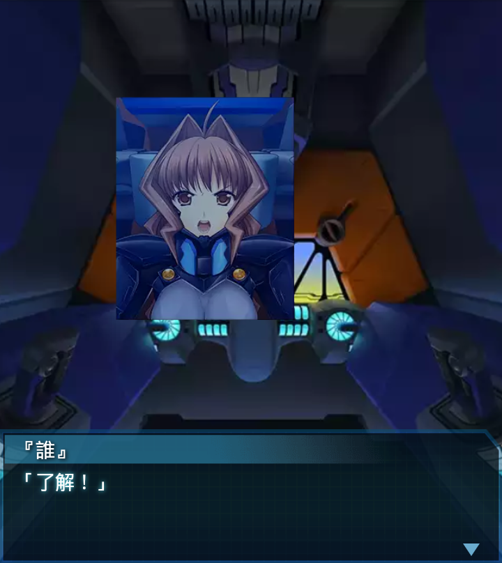

ブリギッテ
「ハイヴまで目前ですが、ＢＥＴＡ、尚も多数！」
ブリギッテ
「突入予定ポイントまでの距離、残り僅かなのに、この数…」
『誰』
「…総力戦の様相を呈してきたな」神宮司まりも
「ローテ中隊、ハイヴ突入に備え、各員機体の損傷及び残弾のチェック
を怠るな！」
『誰』
「そう言えば、ローテ中隊の指揮はベスターナッハ中尉が取っている
ようだが……」

『誰』
「ララーシュタイン大尉は本作戦に参加していないようだな。
どうしたんだ？」
ブリギッテ
「アフリカでの戦闘で中破し、ララーシュタイン機は現在修理中、
私が中隊長代行を務めています」
『誰』
「あの森林火災の時か。大尉の獅子奮迅の活躍には救われたぞ」
ブリギッテ
「はっ！ララーシュタイン大尉が欠けている戦力低下分は、私が
補ってみせます！」
神宮司まりも
「心強いぞ、中尉！ローテ中隊に後れを取らないよう、我々も
連戦に備えるぞ！」

『誰』
「了解！」